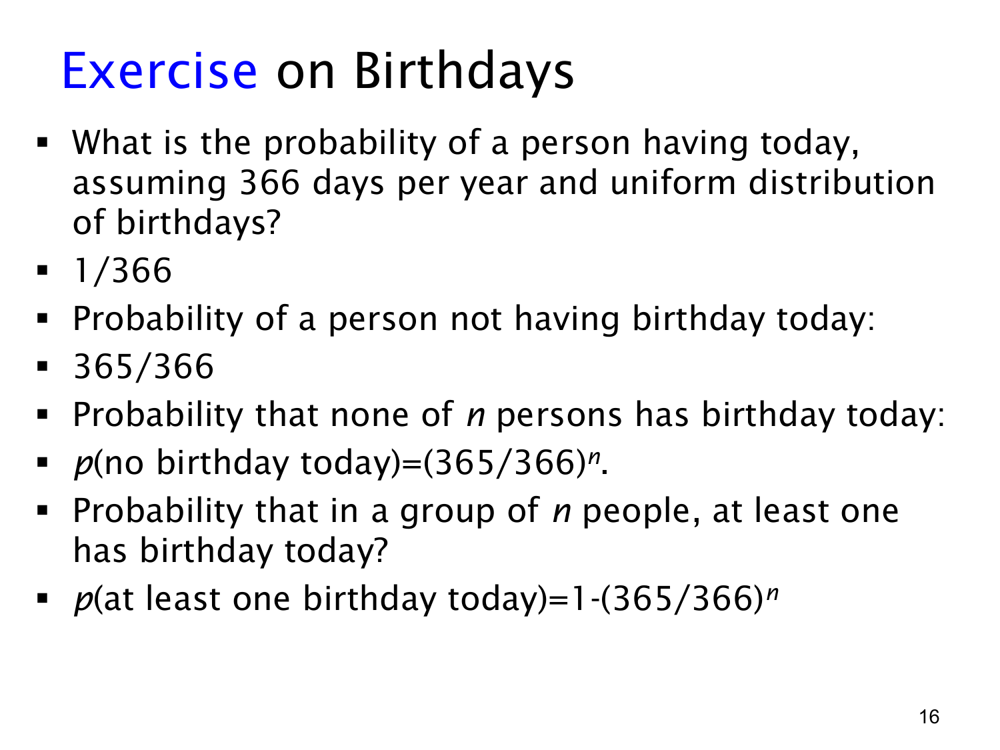

L1.9 · 第 16 页讲解原文
查看这一页课件

生日在今天：固定日期的补事件
这一页问的是“n 人中至少一人今天生日”的概率。课件假设一年有 366 个可能生日日期，每个日期等可能；要得到多人公式，还需要假设不同人的生日相互独立。
对一个人，今天是 366 个可能日期中的一个，因此
p(今天生日)=3661,p(今天不是生日)=366365.
对 n 人，“至少一人今天生日”的补事件是“所有人今天都不是生日”。独立性让我们把每人的概率相乘：
p(无人今天生日)=(366365)n.
所以
p(至少一人今天生日)=1−(366365)n.
也可用等可能序列计数：n 个人的生日日期有 366n 种，而避开今天有 365n 种，得到相同结果。
这个题目与“至少两个人生日相同”不同。这里比较每个人与一个固定日期；生日相同的问题则比较人和人之间的日期，不要求等于今天。
不能直接使用 n/366：若有两人或更多人今天生日，会被重复计算。人数较小时它可作为近似，但准确答案是补事件公式。课件的 366 天、均匀与独立是数学模型的假设，应按这些假设计算，不自行换成 365 天。